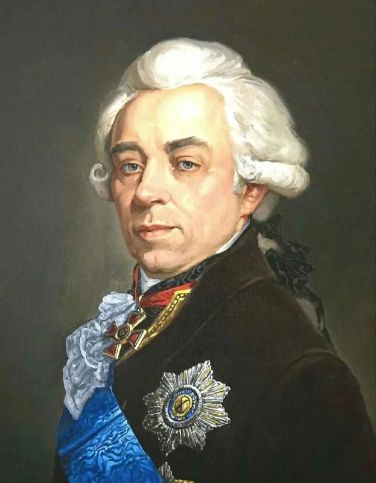
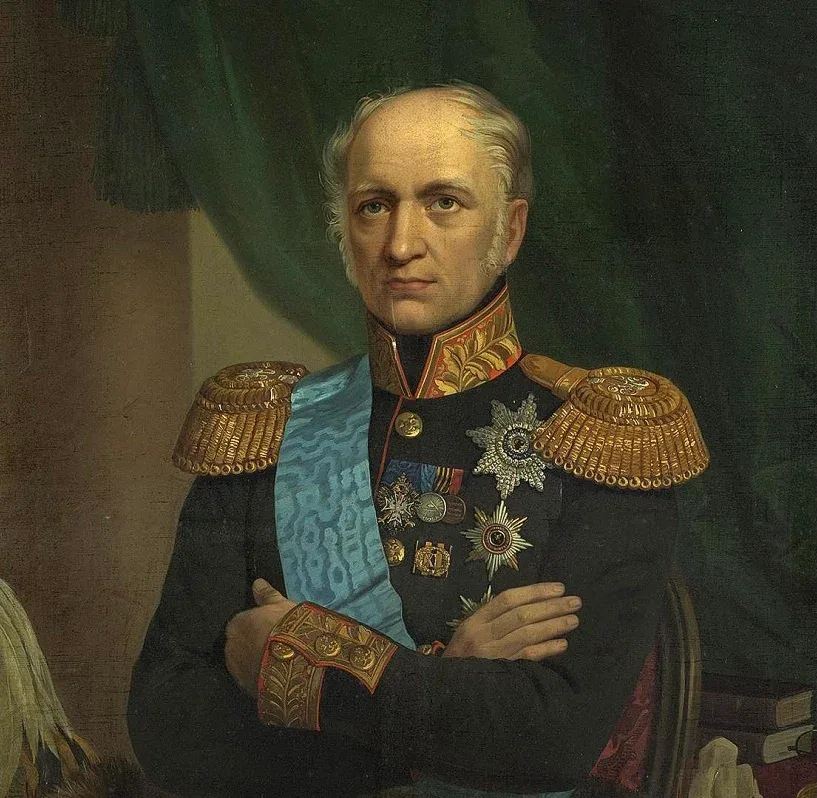
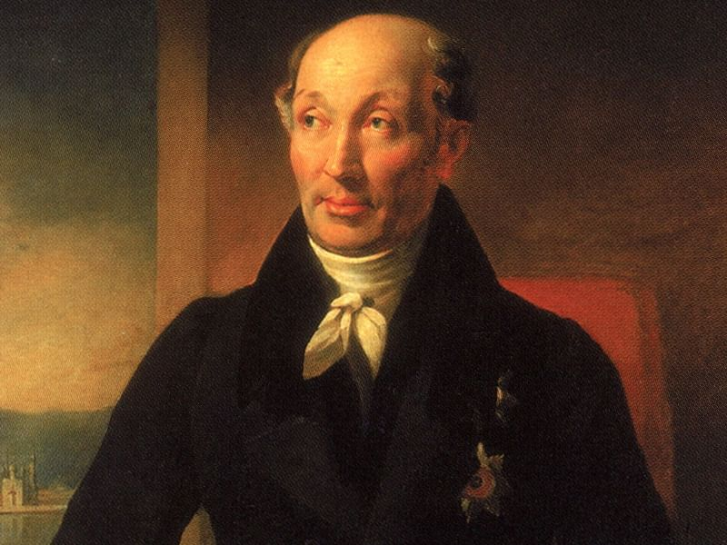
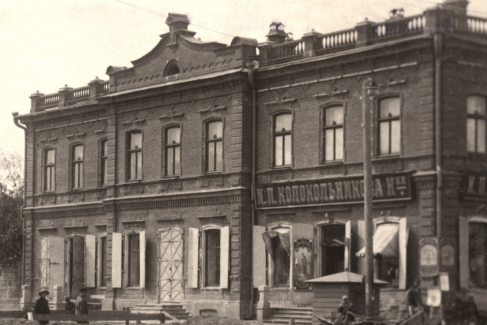
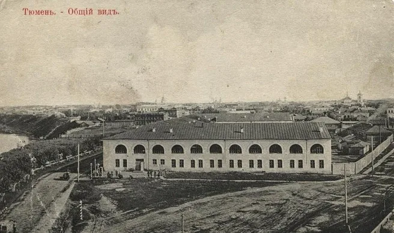
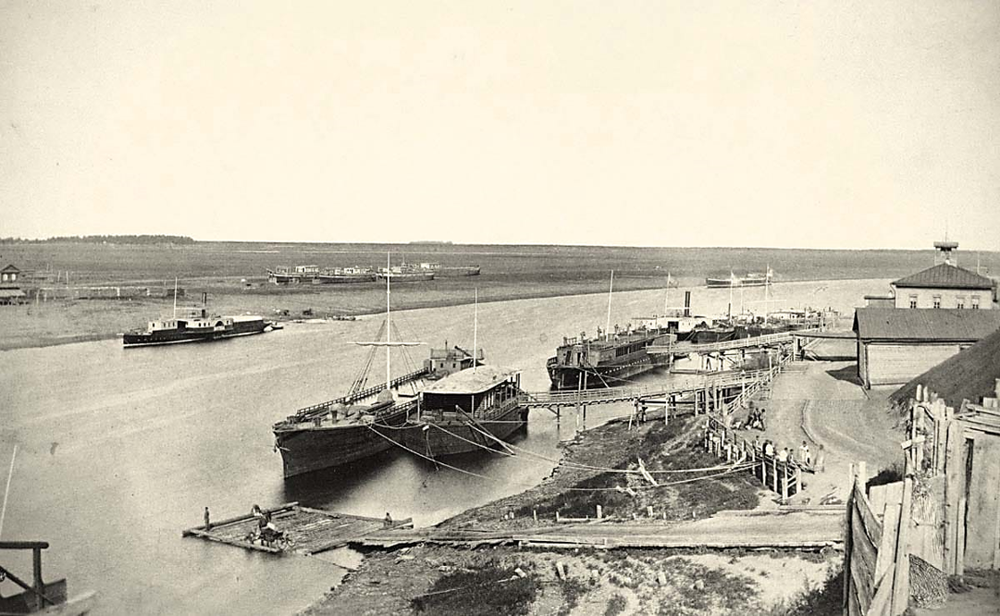
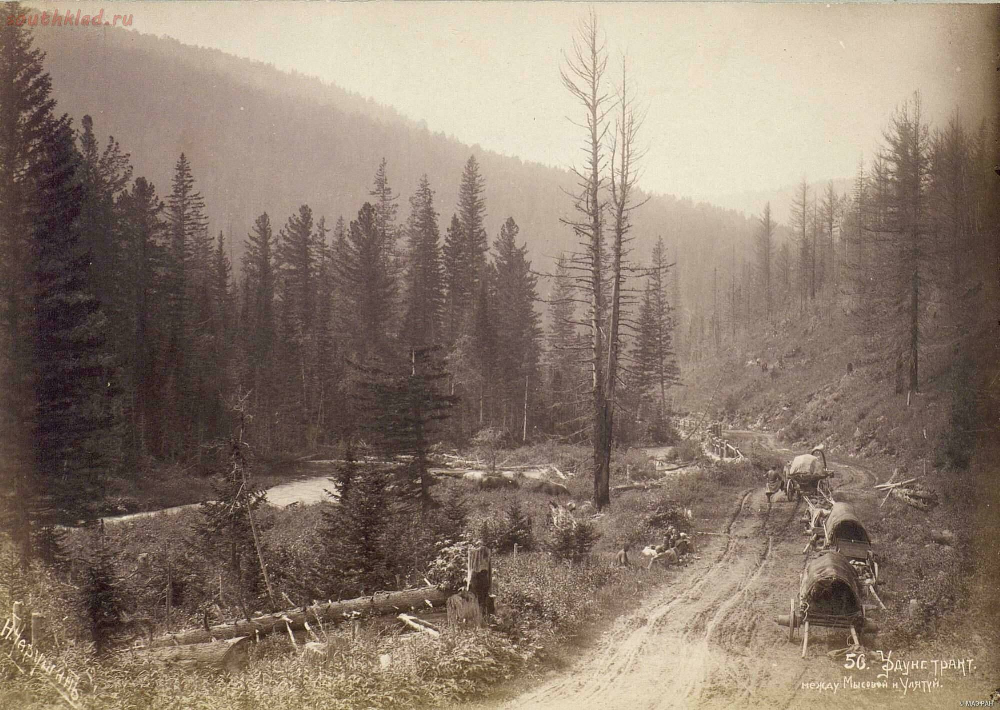
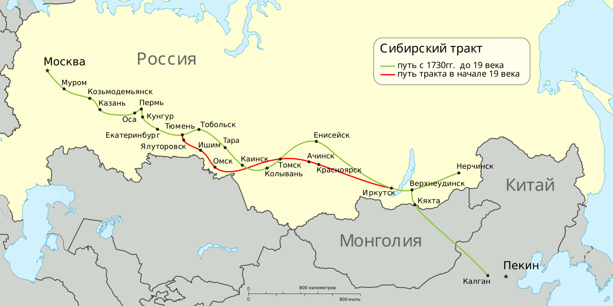

Выдающиеся личности таможенной политики
Таможенная политика России первой половины XIX века зависела от курса государства: от осторожного открытия внешней торговли до протекционизма и систематизации законодательства. Особенно важную роль сыграли Н.П. Румянцев, Е.Ф. Канкрин и М.М. Сперанский.

Граф Николай Петрович Румянцев одним из первых предложил рассматривать внешнюю торговлю как средство усиления государства. В его программе Россия должна была не только продавать сырьё и покупать иностранные товары, но и стать посредником в транзитной торговле между Европой, Китаем, Центральной Азией и Индией.
Румянцев придавал большое значение южным и восточным направлениям торговли. Оренбург и Астрахань должны были стать важными пунктами на пути в Хиву и Бухару. В 1804 году была регламентирована транзитная торговля через Одессу, что показывало стремление государства развивать торговые коридоры и использовать порты как элементы международного обмена.
При этом усиливалась борьба с контрабандой. В 1811 году была закреплена система вознаграждений за задержание незаконно провозимых товаров: большая часть штрафов и стоимости конфискатов шла задержавшим контрабанду и таможенному начальству, а часть направлялась в пенсионный фонд таможенных чиновников и их семей.

Егор Францевич Канкрин стал главным проводником протекционистского курса. После умеренного тарифа 1819 года и восстановления торговых связей с Европой государство столкнулось с проблемой защиты отечественной промышленности. Канкрин считал, что слишком свободный ввоз иностранных изделий мешает развитию российских фабрик и ремёсел.
Тариф 1822 года, связанный с его политикой, резко усилил защиту внутреннего рынка: для части товаров вводились высокие пошлины, а некоторые позиции фактически запрещались к ввозу. Такая система должна была поддержать российское производство и увеличить доходы казны.
Канкрин также уделял внимание организации таможенной службы. При нём укреплялся контроль на границах, развивалась таможенная стража, а борьба с контрабандой становилась одной из важнейших задач таможенных органов.

Михаил Михайлович Сперанский важен для темы таможенного дела не как автор отдельного тарифа, а как организатор правовой систематизации. В первой половине XIX века таможенные правила, указы, тарифы и инструкции накапливались десятилетиями, поэтому государству требовалась единая и понятная законодательная база.
Сперанский руководил работой по созданию Полного собрания законов и Свода законов Российской империи. Благодаря этой кодификации таможенные нормы были включены в общую систему законодательства, а чиновники получили более упорядоченную правовую основу для работы.
Именно такая систематизация подготовила почву для уставов и правил 1830-х годов. Таможенное дело стало восприниматься не только как сбор пошлин, но и как часть государственного управления, где важны единые процедуры, ответственность чиновников и ясное подчинение учреждений.
Исторические места Тюмени
Эти места показывают, как Тюмень развивалась как торговый и речной узел: купеческие лавки обслуживали городскую торговлю, Гостиный двор собирал оптовые и ярмарочные сделки, а пристань на Туре связывала город с сибирскими речными путями.

Лавка связана с историей тюменского купечества и торгового дома Колокольниковых. Здесь хорошо видно, как городская торговля переходила от небольших лавок к крупным магазинам с устойчивыми поставками чая, сахара и колониальных товаров.
Исторический центр
Гостиный двор стал главным торговым комплексом города XIX века. На первом этаже располагались складские помещения, на втором — лавки; во время ярмарок помещения сдавались купцам, а площадь вокруг превращалась в центр торговли.
Гостинодворская площадь
Пакгаузы у пристани служили складами для временного хранения грузов. После прихода железной дороги в 1885 году Тюмень стала перевалочным пунктом: товары доставлялись к станции «Тура», перегружались на пароходы и уходили дальше по сибирским рекам.
Правый берег ТурыКарта-схема исторических мест Тюмени
-
1. Лавка Колокольниковых
ул. Республики, 20 -
2. Гостиный двор
ул. Республики, 2 -
3. Грузовой пакгауз на пристани Туры
Масловский взвоз, пристанская зона
Сибирский тракт и товаропотоки
Сибирский тракт был главной сухопутной магистралью, связывавшей Европейскую Россию с Уралом, Западной и Восточной Сибирью, Забайкальем и торговлей с Китаем через Кяхту. Для Тюмени он имел особое значение: город стоял на переходе между дорогой, речной системой Туры и сибирскими торговыми потоками.
По тракту шли купеческие обозы, почта, переселенцы, чиновники, воинские команды и партии ссыльных. В торговом отношении дорога связывала московские, уральские и сибирские рынки, а также поддерживала движение чая, шелка, пушнины, кож, металлов, мануфактурных изделий и хлеба.
Для таможенной темы тракт важен тем, что именно на таких маршрутах государство контролировало товаропотоки: проверяло документы, взимало пошлины, следило за транзитом и боролось с контрабандой. Тюмень выступала не только городом на дороге, но и узлом, где сухопутная торговля встречалась с речной перевозкой.


На карте видно, что Тюмень находилась на важной развилке между западной частью тракта и дальнейшим движением к Тобольску, Ишиму, Омску, Томску, Иркутску, Кяхте и китайскому направлению.
Маршрут
Тракт связывал Москву, Казань, Пермь, Екатеринбург, Тюмень, Тобольск и далее города Сибири. В начале XIX века часть пути менялась, но значение Тюмени как проходного пункта сохранялось.
Товары
Через Тюмень проходили партии чая, тканей, шелка, металлов, пушнины, кож и хлеба. Часть грузов направлялась дальше по суше, часть перегружалась на речной транспорт.
Контроль
Таможенные учреждения и заставы следили за законностью перевозок, учетом товаров и уплатой сборов. На дальних участках тракта особенно важной становилась борьба с тайным провозом.
Сибирский тракт превращал Тюмень в город-посредник: через него проходили не только люди и почта, но и товары, пошлины, складские операции и контроль государства над движением торговли.